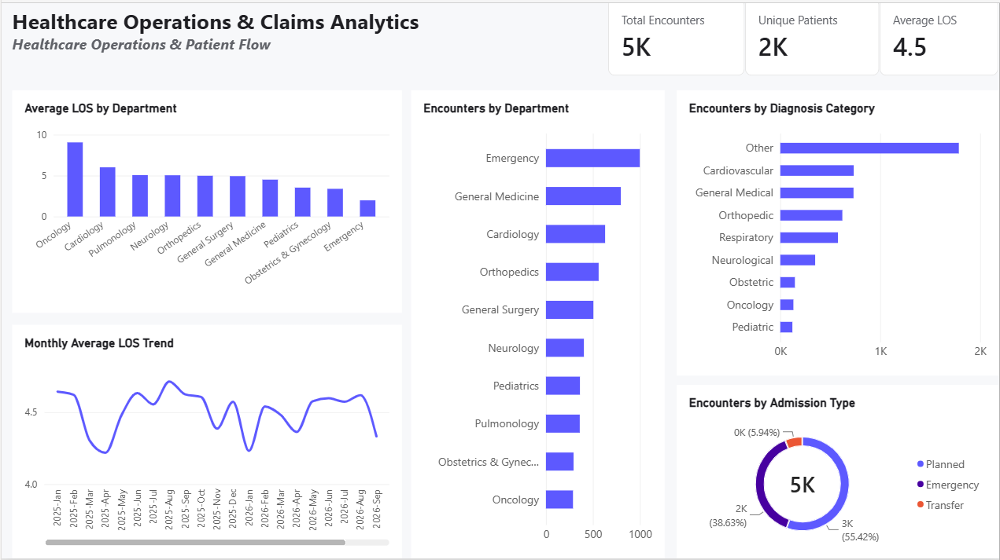
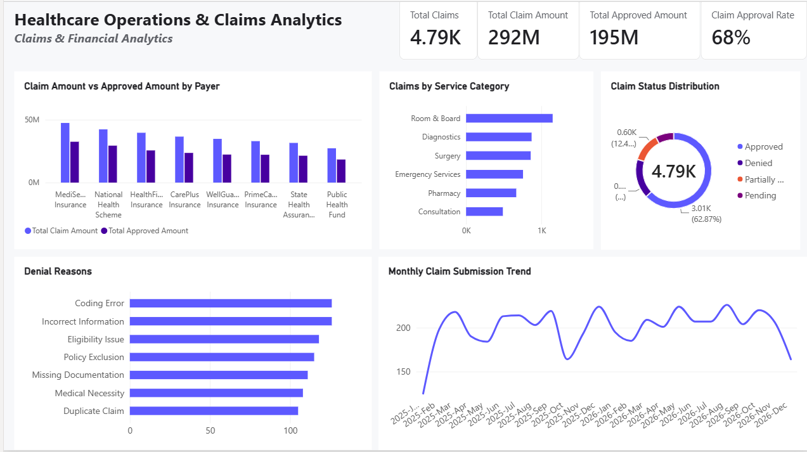
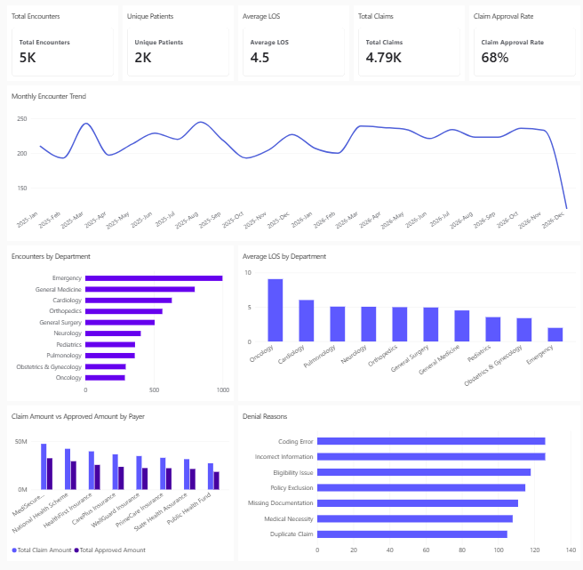

Requirements & Analysis
- Requirement elicitation and analysis
- User stories and acceptance criteria
- Functional solution design and documentation
- Process modelling
- Backlog refinement and prioritization
Hi, I'm Nandini Jain, a Business Analyst who works at the intersection of business and technology—translating business objectives into functional requirements and helping teams move from problems to practical solutions.
Turning business context into structured requirements and supporting teams through the delivery lifecycle.
Working across business and technology to understand stakeholder needs, analyse requirements, and translate them into functional documentation that supports development and delivery. The role involves maintaining requirement clarity, contributing to Agile practices, and supporting alignment across stakeholders and cross-functional teams.
A supporting Power BI project that demonstrates business-focused analysis, KPI definition, data organization, operational trends, and reporting. The project uses synthetic data for demonstration.
High-level view of healthcare activity, operational trends, and claims performance.

Explores encounters by department, average length of stay, and monthly trends.

Examines claims status and financial measures to support performance monitoring.

A consolidated view of key metrics from the published project.

Data note: This portfolio demonstration uses synthetic data. Metrics are illustrative and should not be interpreted as real-world clinical findings.